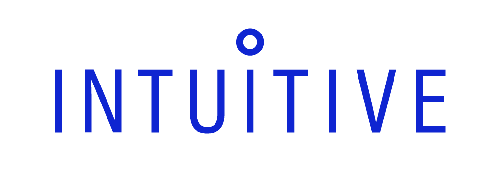
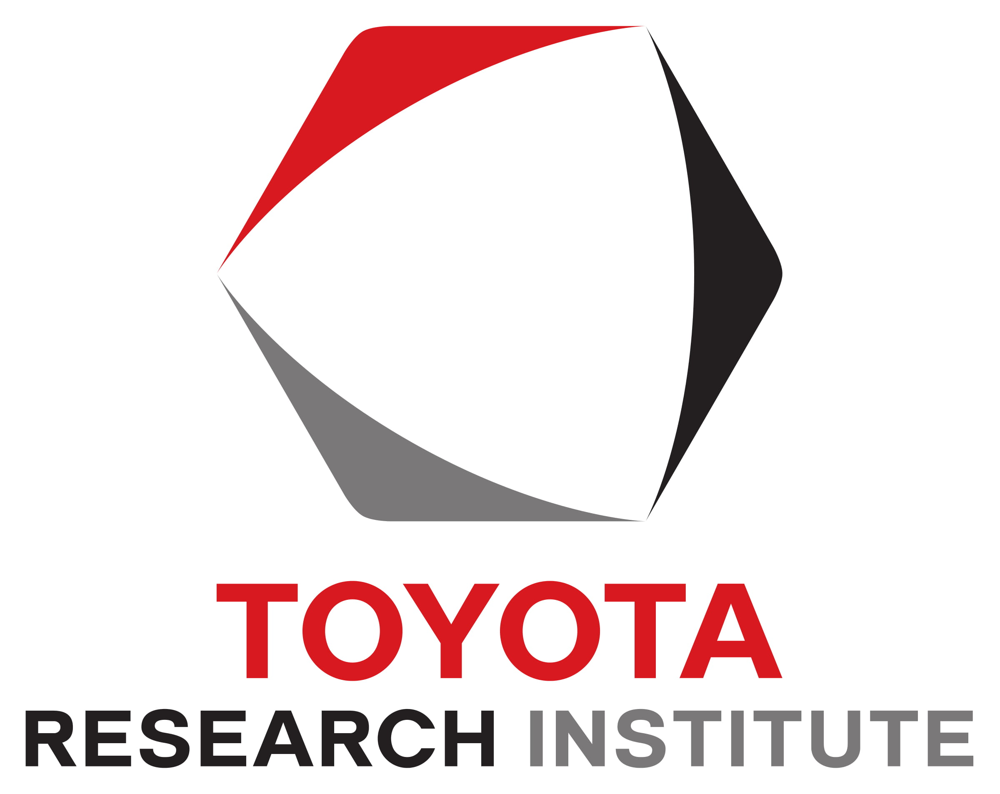

Nov 15, 2019, University of California, Berkeley, International House.
About
The 2019 Bay Area Robotics Symposium aims to bring together roboticists from the Bay Area. The program will consist of a mix of faculty, student and industry presentations. For more details, see the event schedule.
Faculty Organizers:
Mark Mueller (UC Berkeley) and Dorsa Sadigh (Stanford)
Sponsors:
Gold Sponsors:

Bronze Sponsors:

If you are interested in sponsoring BARS 2019, please contact the local organizer, Mark Mueller.